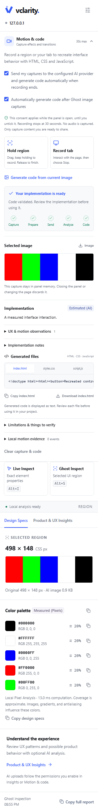

This is a manual developer installation. The download includes the Chrome extension. Live DOM inspection and local palette extraction work independently. AI analysis and code generation need a separately configured, running Vclarity API from the source project; the ZIP does not include that service.
Install in Chrome.
Download and extract the ZIP.Keep the extracted folder in a permanent location. Chrome loads the folder containing manifest.json, rather than the ZIP itself.
Load the extracted extension.Open chrome://extensions in Chrome. Turn on Developer mode, choose Load unpacked, then select that folder.
Open Vclarity on a website.Visit an ordinary HTTP or HTTPS page, then click Vclarity in Chrome’s extensions menu to open its side panel and grant temporary access to that tab. Pin its toolbar icon for quicker access.
Updating an existing installation? Replace the extracted files, choose Reload on Vclarity’s card at chrome://extensions, and reopen the side panel. Reload the website if an older inspector is still visible.
Chrome internal pages, the Chrome Web Store, and non-HTTP(S) pages cannot be inspected.
Your first inspection.
Live Inspect
AltI
Choose Live Inspect, hover to highlight an element, then click it. Review typography, colors, dimensions, spacing, and layout in Design Specs. These values come from browser-computed CSS and rendered geometry, rather than the original stylesheet source.
Exact (DOM)
Ghost Inspect
AltS
Choose Ghost Inspect, then drag over a visible region. Vclarity crops the screenshot and extracts a color palette locally. With the separate AI setup below, open Product & UX Insights, review the disclosure, give consent, and choose Send image & analyze for an image-based report.
Measured (Pixels)Estimated (AI)
Press Escape on the website or use Cancel in the panel to end a selection. The shortcuts are suggested defaults; Chrome or your operating system may reserve them. Check the panel’s current assignments or change them at chrome://extensions/shortcuts.
Connect AI features.
The preview does not include a hosted AI service. Image analysis and Motion & code connect to the Vclarity API running on your own computer. You need the Vclarity source project, a compatible provider account, and the API’s setup instructions.
For video analysis and code generation, the current implementation requires the Gemini adapter with a configured model that supports video and structured output. Existing image reports also support the project’s compatible OpenAI and Ollama Cloud adapters. Provider access and usage limits depend on your account.
Set up from the separate source project
Prepare the source project.Use Node.js 22.12+ and the project’s pinned pnpm version. From the source project’s root, install dependencies and build the extension and API:
pnpm install
pnpm build
Configure the server privately.Follow the source project’s README and provider guide. Copy its server environment template to the local server configuration, select a compatible provider/model, add your provider key on the server, and create a separate local API access token as instructed. Do not put the provider key in the extension.
Keep the API running.Start it in a terminal with Internet access. Use one API process at a time and keep the connection settings expected by the source project:
pnpm dev:api
After a successful build, the documented production alternative is:
pnpm --filter @vclarity/api start
Connect the extension.Open Vclarity’s Settings, enter the separate local service token you configured, then choose Save connection and Test connection. A successful local connection check does not verify the provider’s credentials, model access, or available quota.
Only have the extension ZIP? You can use Live Inspect and local Ghost palette extraction now. Obtain the accompanying source project and its API setup guide separately before using AI analysis or recording for code generation.
Capture an interaction.
30 secondsMaximum per recording
No audioVisible website content only
With a compatible API configured and connected, expand Motion & code. Read the disclosure and enable consent to send your captures to the configured AI provider. Recording controls become available when the setup and consent requirements are met.
Hold region
Drag a rectangle on the website and keep the mouse button held. Pause the pointer briefly to lock the region and begin recording. Keep holding while the effect runs, then release to finish. Press Escape to cancel. Use Record tab when you need to click through an interaction.
Record tab
Choose Record tab, interact with the website, then choose Stop & generate code. This captures the visible tab viewport, rather than the whole page’s scrollable height, Chrome’s interface, or other tabs. Both recording modes stop automatically at 30 seconds.
Consent enables automatic upload. When recording ends, the completed media is sent through your local API to the configured AI provider together with bounded motion evidence. There is no second confirmation after Stop or release. Only capture content you are ready to share. Consent applies while the panel is open; provider handling follows your configured account’s terms.
The panel reports actual processing stages and shows the resulting observations and implementation. Generated HTML, CSS, and JavaScript are labeled Estimated (AI). Select a generated file to copy or download it, then review and test the code before using it. The extension does not execute or inject the generated code.
Closing the panel or changing page context stops the work and discards the current in-memory capture/code. Cancelling cannot recall media already sent to the provider. The preview makes no guarantee of original-source recovery, pixel-perfect reconstruction, or generated-code accuracy.
View the actual 0.2.0 side panel

Actual extension screenshot from a controlled test fixture. The colored strips are fixture content used to verify capture and palette behavior.